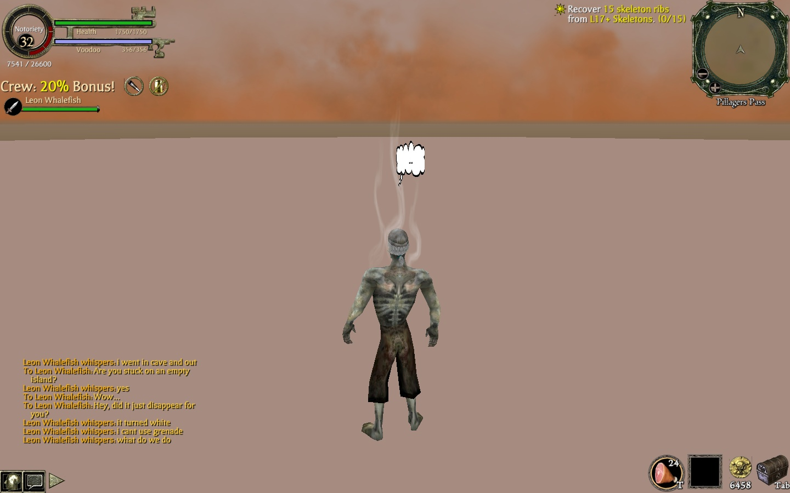

The Internet is Serious Business!
Home > Video Games > PC > Pirates of the Caribbean Online > Glitching in Pillager's Pass

On the late evening of Saturday, 13 February 2010 (the last modified date of the image above), I was playing Pirates of the Caribbean Online with a fellow by the name of Leon Whalefish (who I think was one of my online friends I met within the game, but I cannot recall for sure). At some point he challenged me to a PvP match, which I thought would be rather fun, so I accepted, and we were both teleported to Pillager's Pass.
Soon after the match started, I thought it somewhat strange that we were taking an unusually long time to find each other within the map. I wandered around the map for upwards of a few minutes without ever bumping into Leon, and then stumbled upon a rocky tunnel or cave opening on the side of the map, started walking deeper into it, and suddenly found myself watching a loading screen—apparently, Pillager's Pass, a PvP map, had another scene besides the main one, which was very surprising to me.
It turns out, however, that this additional scene was not supposed to be accessible. When the scene finished loading, I found my character walking around on an empty island with no other players or NPCs; I remember vaguely that it resembled one of the wild
islands, but less polished and with more graphical glitches. I took to exploring, and after around a few minutes, the entire island suddenly disappeared, and my pirate was now walking on that flat, pinkish-tan expanse in the image above.
I was keeping in touch with Leon the whole time via private message, as you can see by our conversation; according to him, he had also gone into the cave and discovered the island, which then vanished for him, too. Although I found the glitch quite interesting, the entire experience was also a bit eerie: I didn't know where I was, I couldn't use any weapons, I never saw Leon, and, unlike nearly every other location in the game, there was no background music playing, so things were almost completely silent (besides the sound of my pirate's footsteps). By the way he typed, I could tell that Leon was most likely a few years younger than me at the time, so his last private message to me in the image above was probably filled with confusion and anxiety:
Eventually, I had to log out and log back in so that I could escape this glitch, and I think I told Leon to do the same thing. This was not an event limited only to me: some other folks have also encountered it, and there's even an article on the game's wiki concerning it.


 All written materials on this Web site are my own, and all are released under the Do What the Fuck You Want to Public License Version 2.
All written materials on this Web site are my own, and all are released under the Do What the Fuck You Want to Public License Version 2.
This page last modified on 28 March 2021.